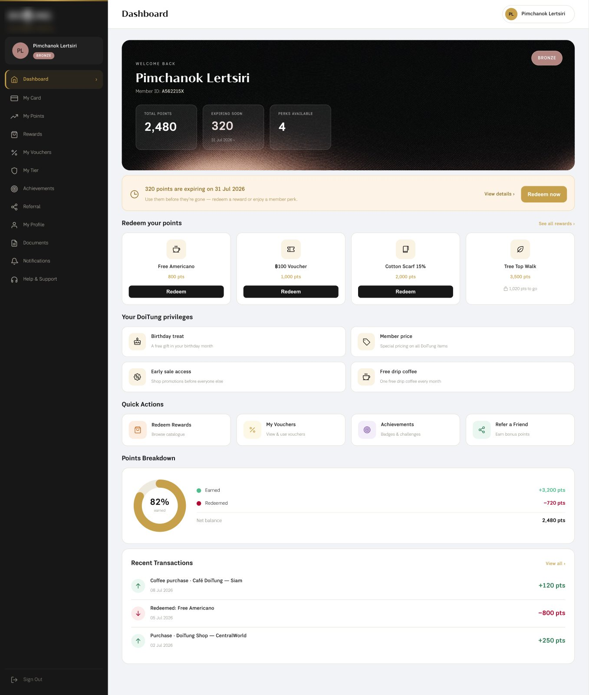
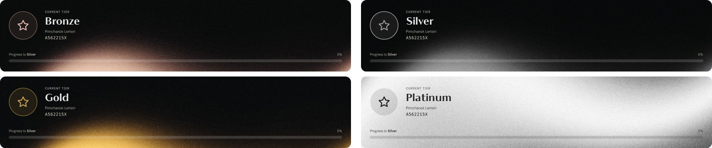
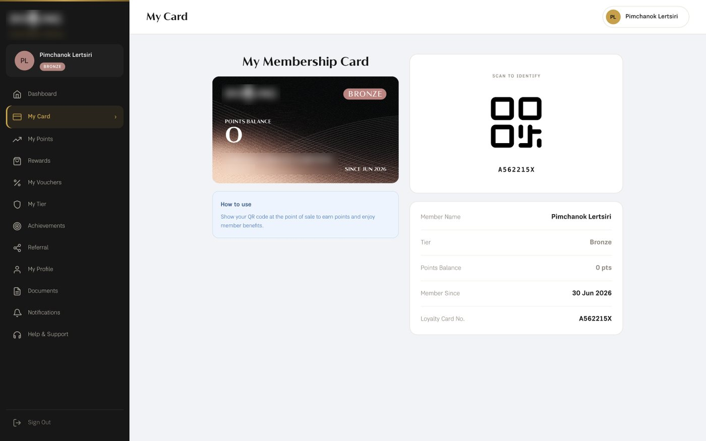
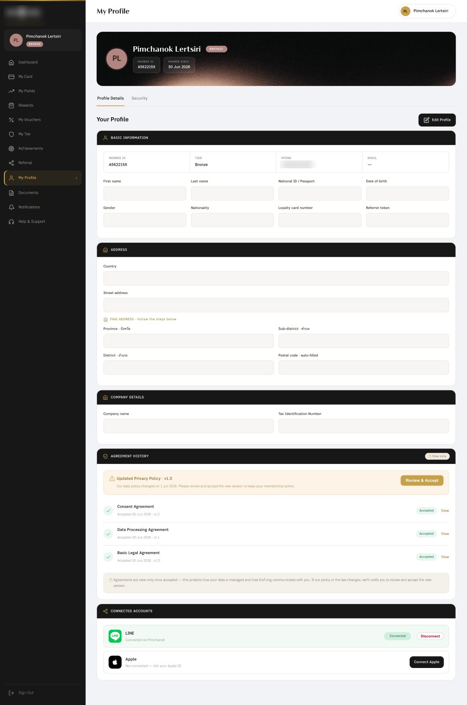
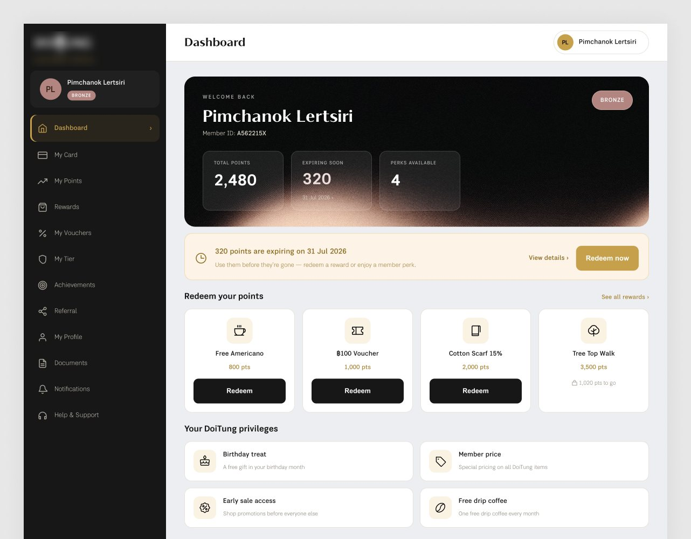
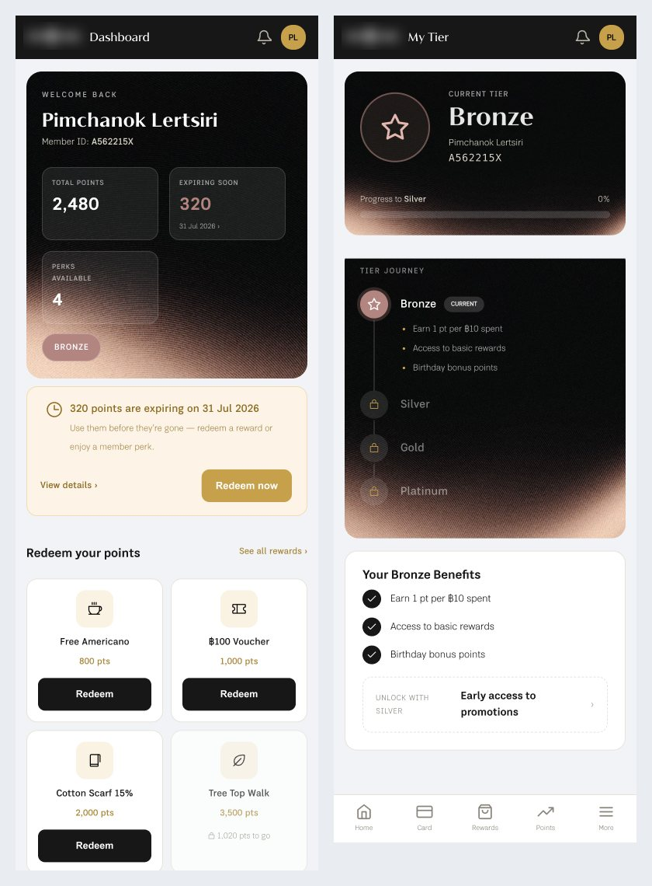

Case Study — 03
DoiTung Member
Portal
A responsive membership portal for a foundation client, produced with AI from TMES's existing CRM system and re-skinned to the client's own CI, in about half the usual design time.
Context
DoiTung is a foundation and a client of TMES. They needed a CRM with a customer-facing membership portal. TMES already had a CRM system, so the question was how to turn it into the client's own product quickly.
Designing every screen by hand, across desktop, tablet and mobile, normally takes me two to three weeks because of the detail involved.
The DoiTung logo is blurred. Member names and numbers shown are sample data.
Method
I used Claude to generate the screens, based on the existing TMES CRM and with DoiTung's CI applied. I wrote the prompts and reviewed the output, and Claude did the production.
Direct
I described the system and asked for every screen as a responsive layout for desktop, tablet and mobile.
Review
I checked each screen myself and told Claude what to correct.
Targeted fixes
I only followed up on selected parts, to avoid spending tokens on a full pass.
Reuse vs New
System structure
- The structure and patterns of the existing TMES CRM system
Client CI
- Dark sidebar and serif headings with gold accents
- Membership tiers: Bronze, Silver, Gold, Platinum, each with its own look
Dashboard
The member's home: points, expiring points, perks, rewards to redeem, privileges and recent transactions on one page.

- Welcome banner with Total Points, Expiring Soon and Perks Available
- An alert for 320 points expiring on 31 Jul 2026, with Redeem now beside it
- Rewards show their point cost, and a locked one shows how many points are still needed
- Privileges, quick actions, a points breakdown and recent transactions follow below
Membership Tiers
The same screens change with the member's tier, so the card, banner and badge always say where the member stands.

- Four tiers, each with its own colour and texture on the banner and badge
- The Tier Journey lists each tier's benefits and shows the next ones as locked
Card & Profile
A digital membership card for use at the point of sale, and a profile page that keeps consent visible.


- My Card pairs the card with a QR code to scan at the point of sale, plus member details
- Profile is split into Basic Information, Address, Company Details, Agreement History and Connected Accounts
- Agreement History flags an updated privacy policy for review and keeps accepted agreements view-only
- Connected accounts for LINE and Apple
Responsive
The same screens, regenerated for tablet and mobile. On tablet the sidebar stays. On mobile it becomes a bottom bar and the content stacks into one column.


- Tablet keeps the desktop sidebar and adjusts the grids
- Mobile swaps the sidebar for a top bar and a bottom bar (Home, Card, Rewards, Points, More)
- Stat tiles and reward cards wrap into two columns, and the expiry alert stacks its text above its actions
Status
The designs have been sent to the client for review. No feedback yet.
Outcome & Reflection
- Design time dropped from an estimated two to three weeks to one to two weeks (my own estimate, not a tracked measurement)
- Responsive screens for desktop, tablet and mobile came out of one workflow
- No client feedback to report yet
What I'd do next. I'd run a fixed consistency check on AI-generated screens before sending them out, covering every tier state and the sample data. Some tier screens still show another tier's benefits and progress text, which a checklist would catch.